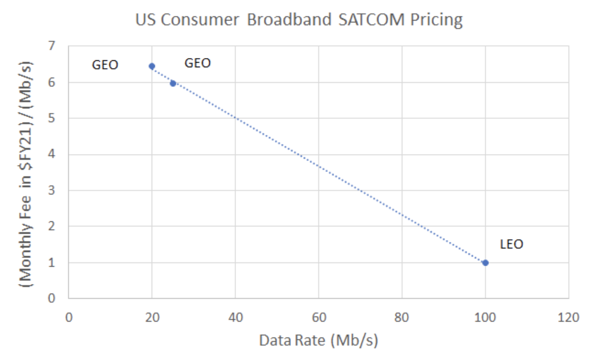

Global broadband enabled by LEO satellite mega-constellation
By the mid-2020s, the reduction in launch cost derived from reusable rockets will lead to multiple low Earth orbit (LEO) satellite mega-constellations that provide high-bandwidth, low-latency internet to Earth. SpaceX, Rocketlab, and others have brought launch costs down under $2,000 per kg in the near term and promise to bring further improvements to under $100 per kg in the future. To learn more about expendable vs. reusable designs and operational costs, check out the launch vehicle node.
Launch costs are typically one-third of the total budget of deploying a satellite constellation. Reduced deployment cost, coupled with the smaller telecommunications satellites required for a LEO network, brings the cost per Mb/s down to ~$1/Mbs/month, as quoted by direct-to-consumer focused Starlink. Comparison to legacy Satcom providers is shown in the chart below.
Data from websites of GEO satcom providers HughesNet & ViaSat, LEO provider Starlink
LEO mega-constellations are growing because the satellite design benefits from a number of features and advances in technology:
- 1. Being closer to Earth means a less powerful antenna is required and the latency is reduced
- 2. Optical intersatellite links reduce the number of ground stations required
- 3. Advances in beam-forming technology for spatial multiplexing allow providers to get more data throughput on their frequency band allocation
This image demonstrates how satellites in a mega-constellation could be distributed around the Earth. Credit: ESA
The proliferation of tens of thousands of assets in LEO has driven interest in solving space debris to an all-time high, with over 20 startups and several aerospace prime contractors offering debris remediation, mitigation, or tracking services. For more information about the importance of space stewardship and space situational awareness, see the orbital debris node.
Providing broadband internet access to underdeveloped countries positively impacts billions of lives. What is more exciting are the second-order effects when millions of people who wouldn’t otherwise have access to information and education are now unleashed and contribute to building a better world.